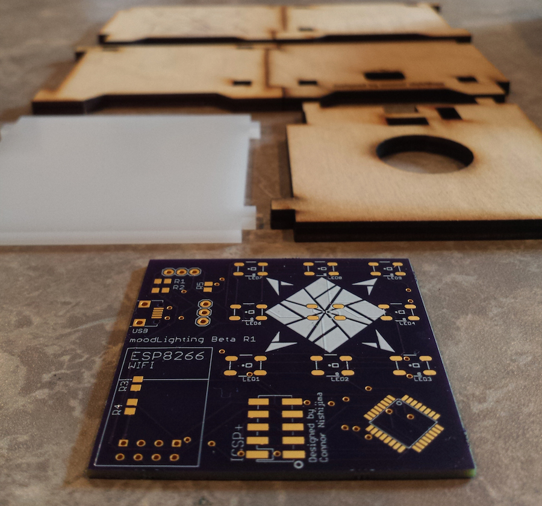
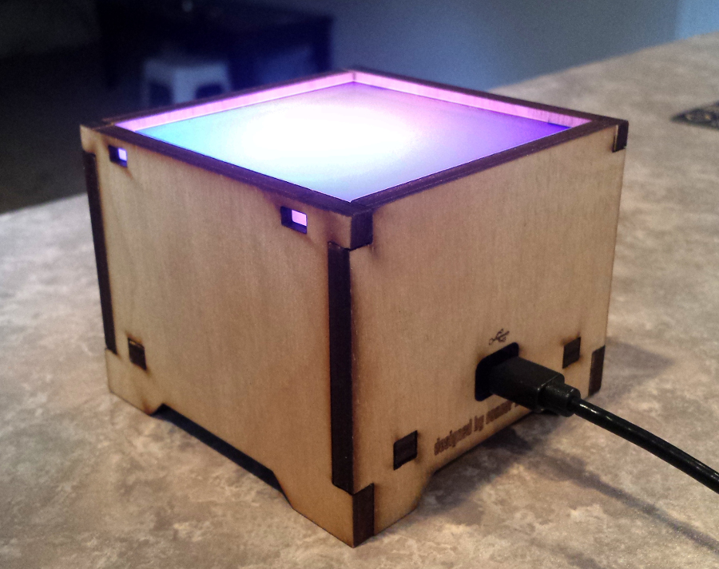

Connor Nishijima created an online service that monitors Twitter for people expressing their emotions, and is in the middle of a Kickstarter campaign to show that data on a WiFi connected display.
The twitter data is analyzed by a server, and you can see it working on the MoodLighting Stats page. The display polls the server for new data every second, and lights up nine LEDs to display the current state of emotions. The light appears to fade between different shades as emotions gradually change, but also can flash to get your attention if a sudden change in emotions is detected.
Hardware
The project uses the popular ESP8266 module for connecting to WiFi, but most of the code is running on an ATmega328P, the same chip that’s on an Arduino Uno.

The electronics are enclosed in a laser cut birch veneer enclosure, with options to buy the display fully assembled, or as a cheaper unassembled version that you can glue together yourself. The LEDs are diffused through a sheet of what looks like frosted acrylic, that creates a blending effect for the LEDs, which is more pleasant to look at than bare LEDs and is well suited for a display showing ambient information.
Software
Most of the intelligence is in the cloud, keeping the firmware simple so it doesn’t need to be changed if Twitter updates its API, or MoodLighting improves its mood data analysis.
Likes
I like that the project leverages code on an online server to do the heavy lifting of analyzing data, which simplifies the firmware running on the display and reduces data usage.
The diffused LEDs are good choice for representing data without being distracting, but the display also implements a flashing mode to grab attention when needed.

The project is open source - the firmware, PCB design, and mechanical details for the enclosure are posted on GitHub as of the start of the campaign - though it’s unclear what license the code and drawings are shared with.
Connor has thought about alternate uses for the display beyond displaying mood data. You can program it yourself with user-friendly IFTTT, or you can bypass the cloud completely by using local UDP messages.
Concerns
The project’s funding goals are very low, and the product doesn’t seem heavily marked up, which means there isn’t a lot of money left over after fulfilling the Kickstarter rewards. One of the stretch goals that has already been met is to create a cross-platform app for the display, which could be a significant expense.
It’s not clear if there is a plan to be able to update the firmware either remotely or over USB, even after I looked at the firmware for both the main microcontroller and the wifi module. It appears that other than the advanced use of sending local packets over UDP, data for the display need to come through the “www.moodlighting.co” server, so the functionality of the device depends on the server being maintained.
Suggestions for the Next Version
I’d like to see an option to customize the feeds that are monitored for mood, to show only twitter accounts you’re following for example. If that’s too complicated, maybe there could be an option to show only certain groups on twitter, e.g. by region, language, or type of twitter user.
For users that just want an ambient information display, and not notifications, an option to turn off the flashing notification would be nice.
The LED fading looks pretty good in the video, but I’d love to see what it could look like if it were using FastLED and some of the code shared in their community instead of the basic Adafruit NeoPixel library.